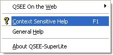
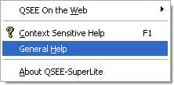
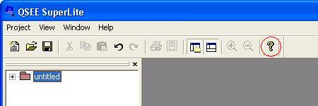

|
|
QSEE SuperLite - General Help
This document provides information regarding the use of the QSEE
SuperLite modeling environment. Use one of the hyperlinks shown
in 'the guide' to find information on a specific topic. For
updated information regarding this product please visit our website
-
http://www.qsee-technologies.com/superlite.
The conditions of use of the QSEE SuperLite environment are defined
within the license agreement. By
installing and/or using this product you are agreeing to the terms and
conditions specified. Please ensure you are familiar with the
license agreement.
To view the initial welcome page click
here
|
|
What is QSEE SuperLite?
QSEE SuperLite is a suite of graphical modeling tools that co-exist within a
common environment. The use of a common platform for all tools provides a single
consistent interface no matter what type of modeling you are performing. The
software derives its name from the fact that it is a small/fast application,
especially when compared to other tools with similar functionality. The use of a
single environment is in support of the original philosophy of this product,
which was to provide a simple to use tool in which users can concentrate on
solving the problem in hand rather than focusing their attention on the
underlying tool. The product is based on an extremely sophisticated meta-modeling
product and although most of the modeling performed within QSEE-SuperLite is
graphical, there is a large amount of underlying intelligence at work. This
intelligence is applied in a number of ways, from ensuring syntactical and
semantic rules of models are being followed, to the automatic generation of
reports and program code.
The QSEE SuperLite Environment
QSEE SuperLite is an integrated modeling environment
that supports a growing number of different tools and techniques all accessed
using diagram editors, text editors, and a repository navigator tree within a
multi-document style interface. Input dialogues and
context sensitive help screens are provided to make the tool very easy to
use. Projects may be saved to disk, printed
(automatically sized to the print page size), emailed to colleagues etc. all
from within the environment. For a description of the general features provided
within the environment click here.
The primary interface of the environment is the
diagram editor. This allows the graphical modeling activities to be
performed using nodes and links (the nature of which is determined by the exact
tool in use). All diagram objects have an associated context sensitive
menu, that is activated by right clicking on the object. The user also has the
ability to place objects into a "selection", which has the effect of focussing
operations on a specific object or group of objects, e.g. resizing of a
graphical node. Dialogue boxes are often used to
allow additional information to be specified about the objects shown on the
diagram editor. In larger projects models can often become large and
spread across several related diagrams. In order to allow the user to have
a conceptual view of their work a navigator tree is
provided. This presents a 'tree' style view of the current models and
their contents, allowing the user to quickly find and identify the location of
modeling objects. All diagrams may have textual, graphical and image based
annotations added.
Getting Help
A large amount of help information is provided directly within the tool itself.
Also there are a number of on-line
practical tutorials available that may be downloaded and followed.
The expandable nature of the tool means that the help is split into two distinct
areas. One is the general help information relating to the use of the
environment itself, i.e. the help you are now reading. The second is help
that is related to the specific tool being used, i.e. context sensitive help.
There are three simple ways to get the help you need.
1) Using the Help Menu
To access the help pages from the main menu left click on the help tab to
expand the drop down list. There are options to launch both types of help. To
open help pages specific to the tool currently in use select the "Context
Sensitive Help" option. To open help pages that are generic to the QSEE
Superlite environment select the "General Help" option , i.e.



2) Using the toolbar shortcut
To launch the help for the tool that is currently in use without going
through the main menu you may click on the shortcut located on the tool bar. The
shortcut button is represented by a yellow question mark as shown circled below,
i.e.

3) Using the keyboard shortcut
A keyboard shortcut can be used to access context sensitive help information
simply by pressing the F1 key. This will automatically identify the
most appropriate help to be shown and open the help window at that point.
This keyboard shortcut is particularly useful for quickly finding help about
specific diagram objects that are currently selected. i.e. select the object for
which help is required and press F1.